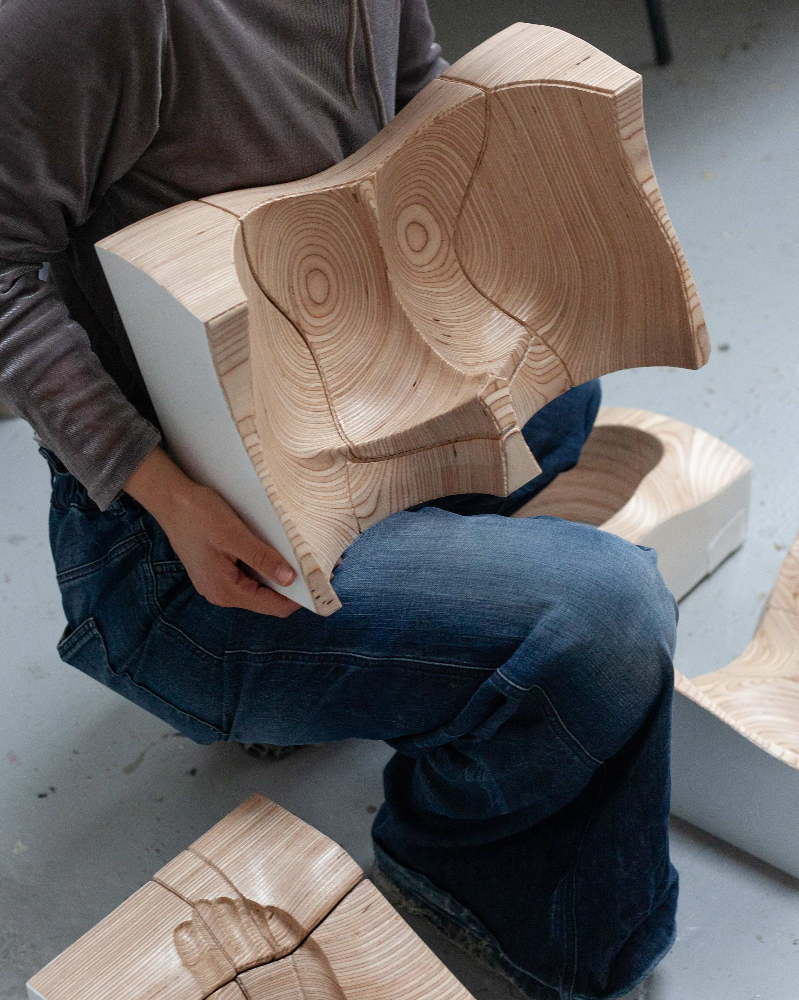
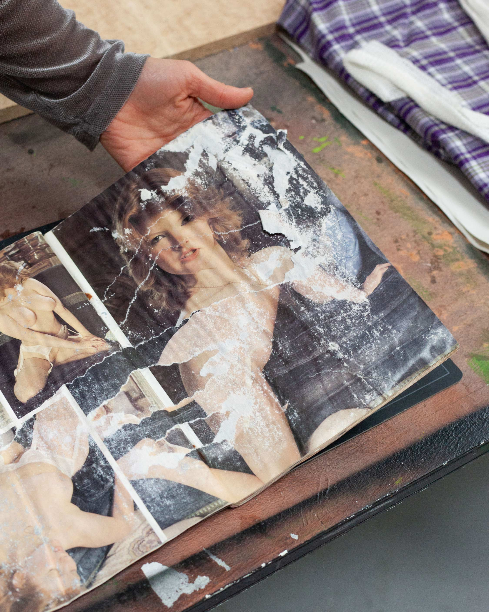
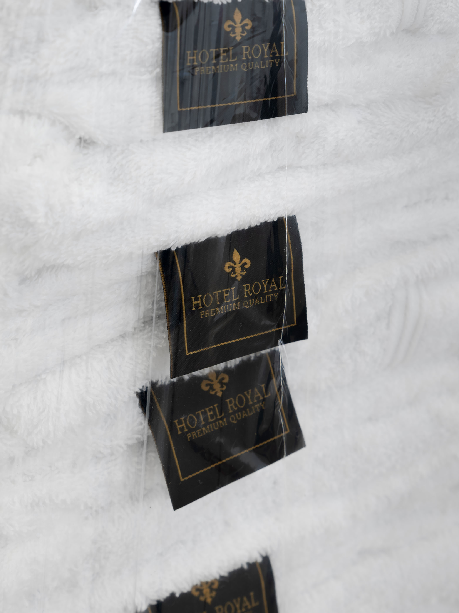

Title (2024)
Victoire Gonzalvez (b. 1997) is an artist based in Paris. Her practice intertwines installation, text, and performance, slitting open interstitial spaces inhabited by personal and collective anecdotes, missteps, and spillover. Through sampling found materials and adapting analog special effects know-how – such as life casting and flesh modeling – she explores the bonds between imitation and control, with a focus on sexual dissidence and affective responses to power.
She studied at the École des Arts Décoratifs (Paris) and was a Weissenhof Fellow (2022–23) at the Staatliche Akademie der Bildenden Künste Stuttgart alongside performance group Discoteca Flaming Star, where she taught workshops as a guest lecturer (2023–24).
Her work has been shown in solo and group exhibitions, as well as residencies in France, Germany, and Belgium. She has also collaborated on prosthetics for films, exhibitions, and performances in France and Italy.
She is a 2–12 residency fellow for 2026 at the Cité internationale des arts in Paris.